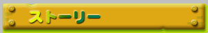

| Wario Land: Super Mario Land 3 |
/ | May 13th, 1994 |
| Action |
| Wario, the character who annoyed Mario in Super Mario Land 2: 6 Golden Coins, is back as the main character! In this action game set on a pirate island, Wario goes on a rampage with his signature body-pounding attacks. |
|  |